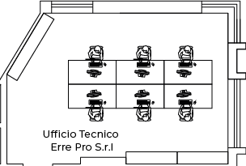

<map name="image_map">
  <area alt="" title="1" href="/Workstation" coords="85,105 143,106 144,76 127,77 127,60 111,60 111,76 85,76 " shape="polygon" (click)="setWorkstationInSession('uff_errepro_1f', 1)">
  <area alt="" title="2" href="/Workstation" coords="202,105 203,76 186,76 187,60 169,60 169,76 143,76 143,106 " shape="polygon" (click)="setWorkstationInSession('uff_errepro_1f', 2)">
  <area alt="" title="3" href="/Workstation" coords="262,105 262,77 238,77 237,60 221,60 222,76 203,77 203,105 " shape="polygon" (click)="setWorkstationInSession('uff_errepro_1f', 3)">
  <area alt="" title="4" href="/Workstation" coords="84,135 112,135 111,152 127,152 127,135 144,135 144,105 84,106 " shape="polygon" (click)="setWorkstationInSession('uff_errepro_1f', 4)">
  <area alt="" title="5" href="/Workstation" coords="202,135 202,106 143,107 143,136 171,136 171,151 186,151 186,136 " shape="polygon" (click)="setWorkstationInSession('uff_errepro_1f', 5)">
  <area alt="" title="6" href="/Workstation" coords="262,136 238,135 238,151 222,152 222,136 203,135 203,106 262,106 " shape="polygon" (click)="setWorkstationInSession('uff_errepro_1f', 6)">
</map>
